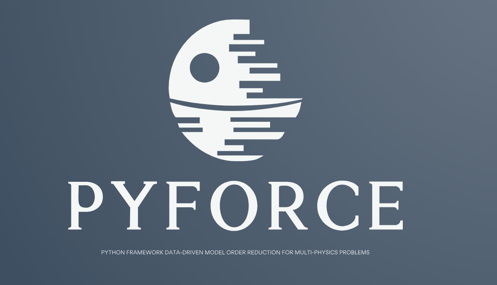

Welcome to pyforce’s documentation
Authors: Stefano Riva, Carolina Introini, Antonio Cammi

Description
pyforce (Python Framework for data-driven model Order Reduction of multi-physiCs problEms) is a Python package implementing Data-Driven Reduced Order Modelling (DDROM) techniques for applications to multi-physics problems, mainly set in the nuclear engineering world.
⚠️ Note on Versioning This documentation describes pyforce v1.0+, which uses
pyvistaandnumpyfor solver-independent mesh handling and integral calculations. The original implementation (described in the JOSS paper) was built upondolfinx. While the architecture has evolved, the underlying methodology remains consistent.
The package is part of the ROSE (Reduced Order modelling with data-driven techniques for multi-phySics problEms) framework which is one of the main research topics investigated at the ERMETE-Lab: in particular, the focus of the research activities is on mathematical algorithms aimed at reducing the complexity of multi-physics models with a focus on nuclear reactor applications, searching for optimal sensor positions and integrating experimental data to improve the knowledge on the physical systems.
At the moment, the following techniques have been implemented:
Singular Value Decomposition (randomised), with Projection and Interpolation for the Online Phase
Proper Orthogonal Decomposition with Projection and Interpolation for the Online Phase
Empirical Interpolation Method, either regularised with Tikhonov or not
Generalised Empirical Interpolation Method, either regularised with Tikhonov or not
Parameterised-Background Data-Weak formulation
SGreedy algorithm for optimal sensor positioning
an Indirect Reconstruction algorithm to reconstruct non-observable fields
This package is aimed to be a valuable tool for other researchers, engineers, and data scientists working in various fields, not only restricted to the nuclear engineering world. This documentation includes a brief introduction to the world of Reduced Order Modelling and dimensionality reduction, the API documentation and some examples of how to use the various modules of the package.
This work has been carried out at the Nuclear Reactors Group - ERMETE Lab at Politecnico di Milano, under the supervision of Prof. Antonio Cammi. The original development of the package started in 2022 during the PhD research of Stefano Riva, and it is still ongoing.
How to cite pyforce
If you use pyforce in your research, please cite the JOSS paper as the primary software reference.
Note: While the JOSS paper describes the original dolfinx-based implementation, it remains the standard citation for the pyforce project until the publication of the new methodology.
[Software Reference] S. Riva, C. Introini, and A. Cammi, “pyforce: Python Framework for data-driven model Order Reduction of multi-physiCs problems,” Journal of Open Source Software, vol. 11, no. 117, p. 6950, 2026. https://doi.org/10.21105/joss.06950
For the original papers, with applications on nuclear reactors (multiphysics modelling), please also cite:
[Model Bias Correction] S. Riva, C. Introini, and A. Cammi, “Multi-physics model bias correction…”, Applied Mathematical Modelling, 2024. https://doi.org/10.1016/j.apm.2024.06.040
[Sensor Positioning and Indirect Reconstruction] A. Cammi, S. Riva, et al., “Data-driven model order reduction…”, Nuclear Engineering and Design, 2024. https://doi.org/10.1016/j.nucengdes.2024.113105
For LaTeX users:
@article{pyforce_JOSS,
doi = {10.21105/joss.06950},
url = {[https://doi.org/10.21105/joss.06950](https://doi.org/10.21105/joss.06950)},
year = {2026},
publisher = {The Open Journal},
volume = {11},
number = {117},
pages = {6950},
author = {Stefano Riva and Carolina Introini and Antonio Cammi},
title = {pyforce: Python Framework for data-driven model Order Reduction of multi-physiCs problems},
journal = {Journal of Open Source Software}
}
@article{RIVA2024_AMM,
title = {Multi-physics model bias correction with data-driven reduced order techniques: Application to nuclear case studies},
journal = {Applied Mathematical Modelling},
volume = {135},
pages = {243-268},
year = {2024},
issn = {0307-904X},
doi = {https://doi.org/10.1016/j.apm.2024.06.040},
url = {https://www.sciencedirect.com/science/article/pii/S0307904X24003196},
author = {Stefano Riva and Carolina Introini and Antonio Cammi},
keywords = {Reduced order modelling, Data driven, Nuclear reactors, Multi-physics, Model correction},
}
@article{CAMMI2024_NED,
title = {Data-driven model order reduction for sensor positioning and indirect reconstruction with noisy data: Application to a Circulating Fuel Reactor},
journal = {Nuclear Engineering and Design},
volume = {421},
pages = {113105},
year = {2024},
issn = {0029-5493},
doi = {https://doi.org/10.1016/j.nucengdes.2024.113105},
url = {https://www.sciencedirect.com/science/article/pii/S002954932400205X},
author = {Antonio Cammi and Stefano Riva and Carolina Introini and Lorenzo Loi and Enrico Padovani},
keywords = {Hybrid Data-Assimilation, Generalized Empirical Interpolation Method, Indirect Reconstruction, Sensors positioning, Molten Salt Fast Reactor, Noisy data},
}